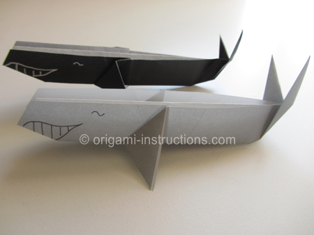
Origami Whale Step 1: Start with a 6 inch x 6 inch (15cm x 15cm) square origami paper, color side down. Fold paper in half on the diagonal axis. Crease well and unfold.
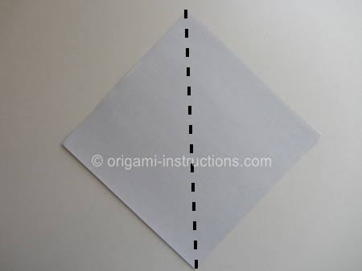
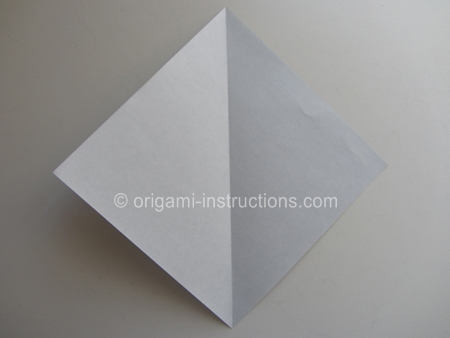
Origami Whale Step 2: Starting from the bottom, fold both sides to meet in the center. Crease well and unfold.
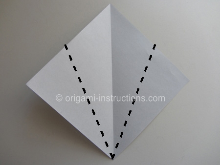
Origami Whale Step 3: Now, starting from the top, fold both sides to meet in the center. Crease well and unfold.
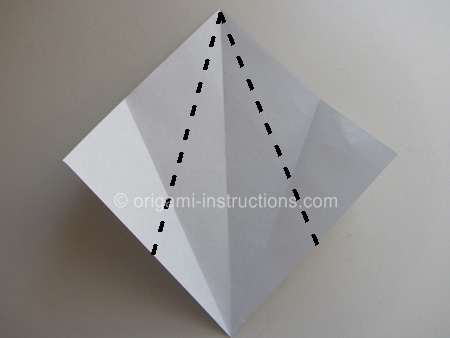
Origami Whale Step 4: Make the 2 horizontal creases as shown. The easiest way to do this is to fold paper in half but only crease on the ends.
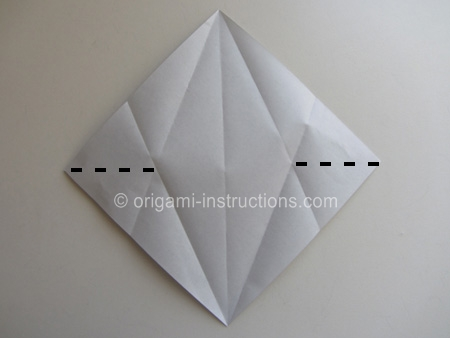
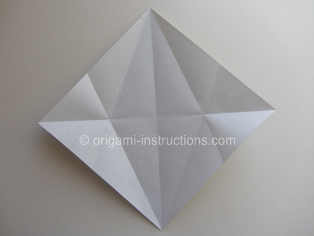
Origami Whale Step 5: OK, we're now going to bring the sides back into the center. Starting with the right side, fold both the top and bottom to the center. They will overlap and create an extra "flap". Just press the flap down to one side.
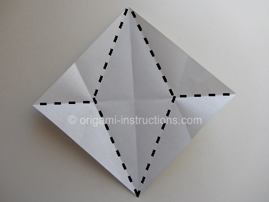
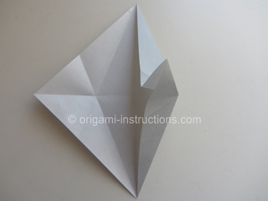
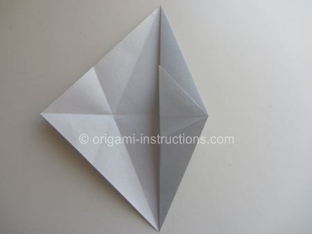
Repeat for the left side. This is called a fish base.
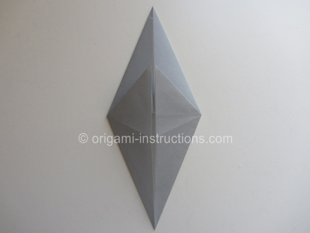
Origami Whale Step 6: Flip paper over. Fold both sides to the center.
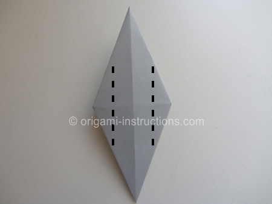
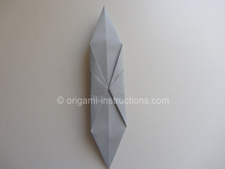
Origami Whale Step 7: Flip paper over and rotate.
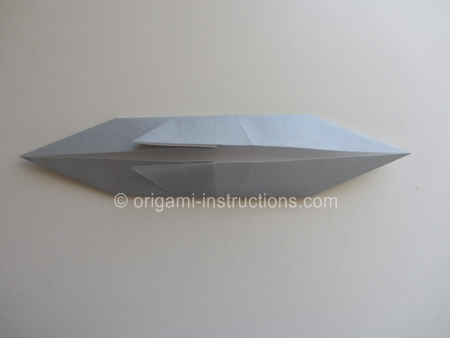
Origami Whale Step 8: Here comes the first cut. Just make a slit about 1.5 inches (or about 3.5cm) long.
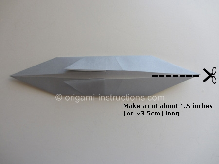
Origami Whale Step 9: Fold paper in half.
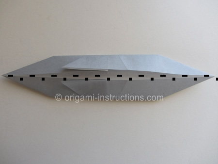
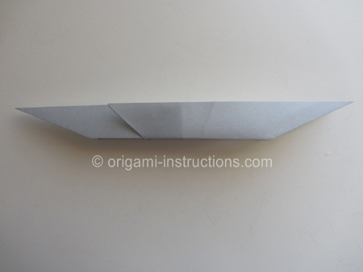
Origami Whale Step 10: Now make the 2nd cut.
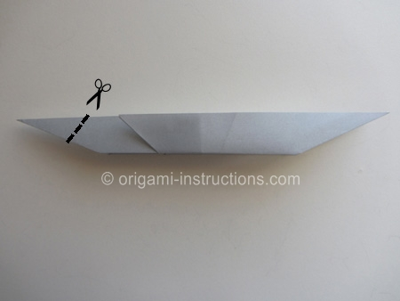
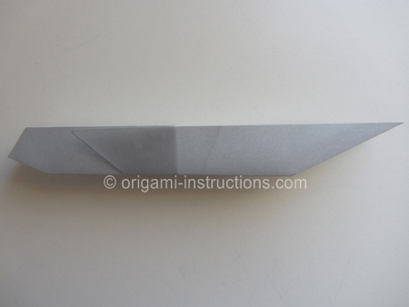
Origami Whale Step 11: Now make 2 diagonal folds, one to shape the flipper and the other to shape the tail fluke.
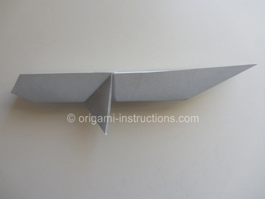
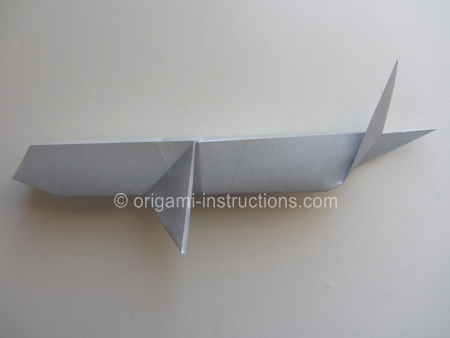
Origami Whale Step 12: Flip paper over. Make the 2 diagonal folds on this side to shape the flipper and tail fluke.
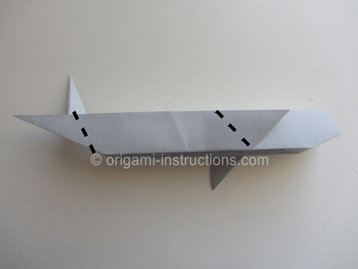
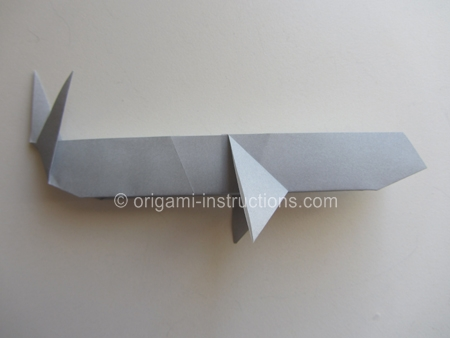
and your origami whale is complete!
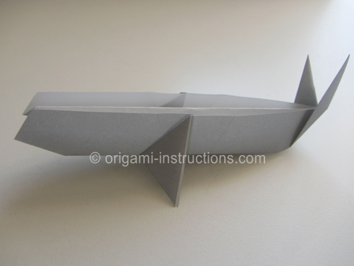
Here are my 2 very happy origami whales swimming along.....